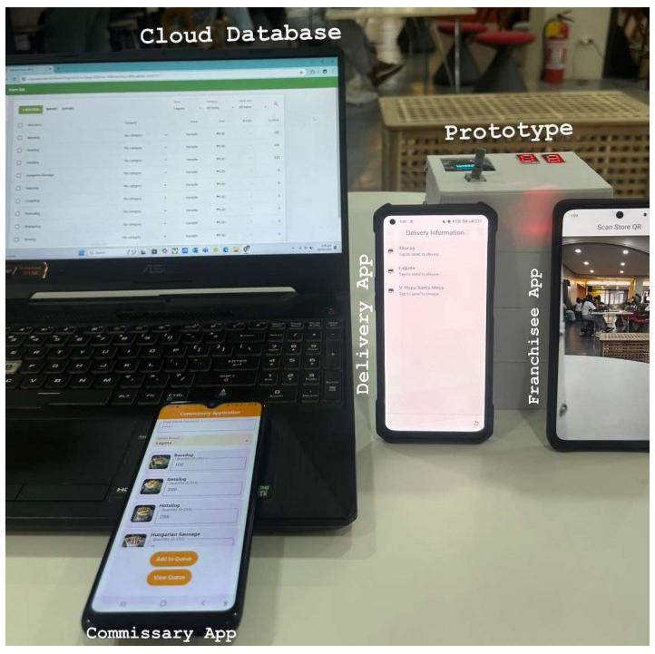

QR Code-Based Inventory Management System Using ATMega328P, Loyverse API, and Flutter

-
Co-developed an inventory monitoring system by programming the
ATMega328P microcontroller using Arduino IDE and integrating it with
the Loyverse API to automate QR code generation, scanning, and
synchronization with a cloud-based database.
-
Designed the circuit schematic and PCB layout using EasyEDA, and fabricated
the custom PCB via JLCPCB, ensuring reliable hardware performance and
seamless integration with embedded components.
-
Delivered a scalable solution for a food franchise client, improving inventory transparency,
branch coordination, and operational scalability across commissary and franchise locations
through three Flutter-based mobile applications.
Back to Projects